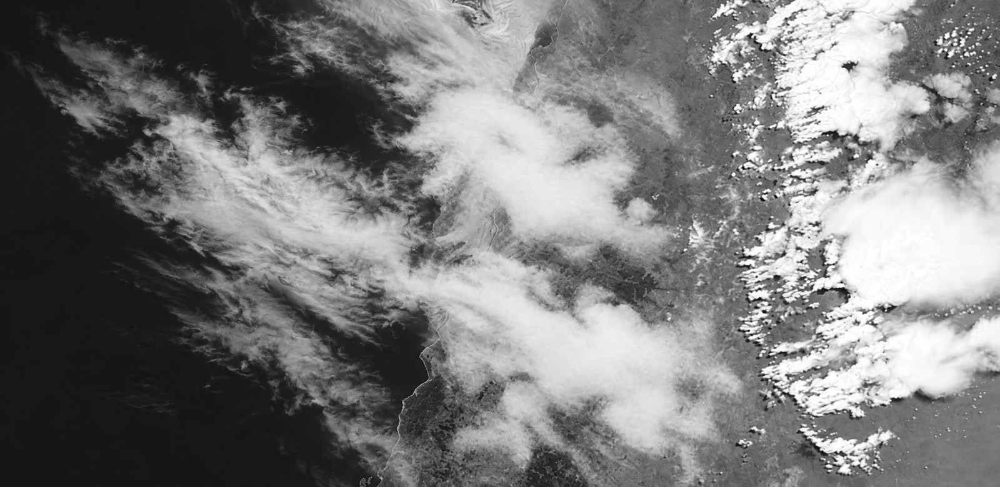
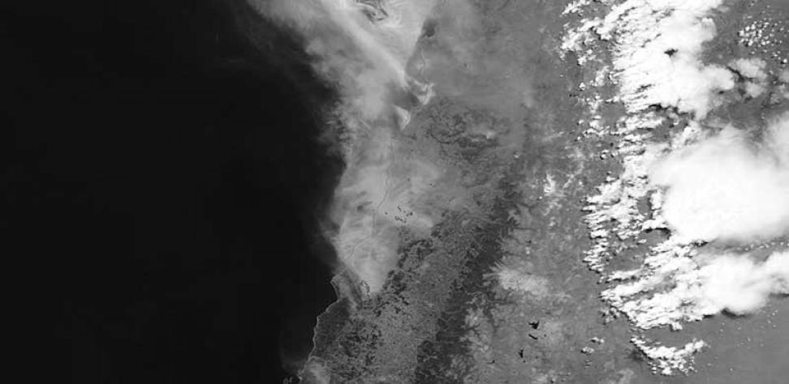

♡ ◯ ↗▱
1.248 Me gusta
chile_en_imagenes_ejercicio Esta foto fue tomada hoy en Chile. Muestra los incendios de febrero de 2024 desde el espacio. Compártanla para que nadie diga que exageramos.
 NM3 · Unidad 3 · Clase 5Viernes 9 de octubre de 2026Guía PDFVer guía
NM3 · Unidad 3 · Clase 5Viernes 9 de octubre de 2026Guía PDFVer guíaGuía · página 1
¿Qué hace creíble un mensaje?
Comenten una primera idea.
Conversación oral · No requiere otra respuesta escrita.
Trabajo en papel · Sin celular
Guía · página 1
Trabajo individual en papel. Sin celular.
Trabajo en papel · Sin celular
Guía · página 1
Verificar afirmaciones sobre casos chilenos, contrastando imágenes, fuentes primarias y fechas, para fundamentar una conclusión responsable.
Trabajo en papel · Sin celular
Guía · página 1
Afirmación: algo que el mensaje asegura y podemos comprobar.
Evidencia: un dato o registro que ayuda a comprobar una afirmación.
Fuente primaria: el registro original o quien produjo el dato; revisar si es competente para ese asunto.
Conclusión: lo que podemos afirmar después de comparar el mensaje con las evidencias.
Trabajo en papel · Sin celular
Guía · página 2

1.248 Me gusta
chile_en_imagenes_ejercicio Esta foto fue tomada hoy en Chile. Muestra los incendios de febrero de 2024 desde el espacio. Compártanla para que nadie diga que exageramos.
Publicado: 3 de febrero de 2024
Lee y compara con la página 2 de tu guía.
Guía · página 3
Recurso: «Fires in Chile» · Incendios en Chile.

Lee y compara con la página 3 de tu guía.
Guía · página 3
| Publicación del registro | 23 de enero de 2017. Fecha en que NASA publicó el registro. |
|---|---|
| Actualización de la página | 14 de mayo de 2025. Fecha de actualización de la página web. |
N1 · NASA Earthdata, archivo de imagen. Paráfrasis de la fuente oficial, consultada el 6 de octubre de 2026. https://www.earthdata.nasa.gov/news/worldview-image-archive/fires-chile
Lee y compara con la página 3 de tu guía.
Guía · página 4
1. Escribe qué lugar y fecha afirma la publicación. Luego explica si los «Me gusta» bastan para creerle.
2. Compara A con N1. Describe dos detalles que se mantienen y una diferencia en las nubes.
Responde en la página 4 de tu guía.
Guía · página 4
3. Compara la fecha que A atribuye a la foto con la fecha en que se tomó según N1. ¿Coinciden? Justifica.
Elige: Se sostiene Se contradice Mezcla aciertos y errores No se puede determinar
Justifica con dos datos de N1. Explica qué cambió en la foto y si su fecha tiene respaldo.
5. Reescribe la publicación con la fecha correcta y el nombre de la fuente.
Responde en la página 4 de tu guía.
Guía · página 5
30 de julio de 2025
Contacto del grupo
↪ Reenviado muchas veces
¡Ya está todo cancelado! El SHOA canceló a las 08:50 de hoy la amenaza de tsunami en todas las costas de Chile, después de más de 37 horas de vigilancia. El nombre de la institución y el dato exacto de la hora lo confirman.
09:00
Lee y compara con la página 5 de tu guía.
Guía · página 5
30 de julio de 2025
Ana: Amén.09:01
Rosa: ¡Qué terrible todo lo que pasó!09:02
Carmen: Menos mal, mi hija está en la playa.09:03
Diego: ¿Esa información de dónde es? ¿Tienes el enlace oficial?09:04
Lee y compara con la página 5 de tu guía.
Guía · página 5
El SHOA estableció la cancelación total de la amenaza de tsunami en todas las costas de Chile a las 08:50 del 31 de julio de 2025, después de más de 37 horas de monitoreo.
El SNAM vigiló boyas y estaciones del nivel del mar y emitió 46 boletines. DIRECTEMAR, de la Armada de Chile, registra el hecho.
directemar.cl
Fecha del registro: jueves 31 de julio de 2025
D1 · DIRECTEMAR, registro oficial de 31-07-2025. Paráfrasis de la fuente oficial, consultada el 6 de octubre de 2026. www.directemar.cl/…
Lee y compara con la página 5 de tu guía.
Guía · página 6
6. Escribe qué fecha de cancelación afirma A y a qué zonas de Chile dice que afecta.
7. Compara la fecha y hora de la cancelación mencionada en A con las registradas en D1. Escribe qué coincide y qué cambia.
Responde en la página 6 de tu guía.
Guía · página 6
8. ¿El aviso «Reenviado muchas veces» identifica la fuente original? Explica por qué consultarías D1.
Elige: Se sostiene Se contradice Mezcla aciertos y errores No se puede determinar
Justifica con dos datos de D1. Señala qué parte tiene respaldo y cuál no.
10. Responde en dos o tres oraciones: corrige la cadena y cita la fuente.
Responde en la página 6 de tu guía.
Guía · página 7
En estas elecciones puedes elegir un solo día para votar: sábado 26 o domingo 27 de octubre de 2024. Se utiliza lápiz pasta azul. Revisa tu mesa y local en consulta.servel.cl.
10:15 · 25 oct. 2024 · 8.400 visualizaciones
Lee y compara con la página 7 de tu guía.
Guía · página 7
Mario @mario_aula
Voy a ir el sábado; el domingo estará lleno.
Paula @paula_aula
Entonces, ¿se puede ir a votar los dos días?
René @rene_aula
No vayan a votar, está todo arreglado.
Elena @elena_aula
Voy a ir el domingo antes de las seis, porque tengo cosas que hacer.
Lee y compara con la página 7 de tu guía.
Guía · página 7
Para las Elecciones Regionales y Municipales de octubre de 2024, cada persona puede escoger si vota el sábado 26 o el domingo 27 de octubre.
Se utiliza lápiz pasta azul. Revisa tu mesa y local en consulta.servel.cl.
servel.cl
Proceso electoral: octubre de 2024
S1 · Servel, proceso municipal y regional de 2024. Paráfrasis de la fuente oficial, consultada el 6 de octubre de 2026. www.servel.cl/…
Lee y compara con la página 7 de tu guía.
Guía · página 8
11. Escribe tres datos de A y la evidencia de S1 que respalda o contradice cada uno.
Elige: Se sostiene Se contradice Mezcla aciertos y errores No se puede determinar
Justifica tu decisión con dos datos de S1. Indica a qué elección se refiere.
Responde en la página 8 de tu guía.
Guía · página 8
13. ¿S1 demuestra lo que afirma el comentario B? Explica qué permite concluir y qué información falta.
14. ¿El perfil, el enlace o un verificado bastan para confiar en un mensaje? Indica qué fuente y qué fecha revisarías para otra elección.
Responde en la página 8 de tu guía.
Guía · página 9
16. Elige dos elementos del formato que generen confianza o urgencia. ¿Demuestran que el mensaje es correcto? Justifica.
17. Escribe tres pasos para verificar una noticia. Indica qué comprobarías en cada uno.
Responde en la página 9 de tu guía.
Guía · página 9
Comenta la conclusión de cada caso y un dato que la apoye. En el caso 3, distingue A y B.
Respuesta oral. Apóyate en tus respuestas anteriores.
Afirmación → Fuente y fecha → Evidencia → Conclusión
Respuesta oral. Apóyate en tus respuestas anteriores.
Comentario B
Entonces queda demostrado que todas las próximas elecciones en Chile serán siempre sábado y domingo.